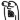
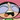

| 2012/03 22 Thu | 99回目*marika |
いつも読んでくださってる方、
初めて読んでくださった方、
コメントしてくださった方、
ありがとうございます:)
*****
沢山のコメント、本当にありがとうございました。
心に響いて、胸が熱くなって、
...泣いてしまった。
あっ、また泣いたね？
なんて言わないで‼
私、本当にみなさんに感謝したい。
ことばじゃ足りません。
私はみなさんの声で
何度も何度も助けられてるんだな。
って本当に思いました。
みなさんがいてくださるから
私は頑張れるんだな。って
だから
感謝の気持ちをちゃんとかたちで表したい。
「成長したね」
と思ってもらえるように。
もっとだいすきになってもらえるように。
アンダーとして、学んだこと。
これから学ぶこと。
全て自分にとって大切なことなんだ。
必要なことなんだ。
うん＊
遠くてもいいんです。
でも、離れないでください。
ずっと見ててください。
待っててください。
いつか、チャンスの順番がくるまで...
*****
今日はLesson前にねねが
お家に遊びに来ました。
いやー最近部屋掃除してたから
よかったー

ねねがなんかうきうきしてて
こっちの伊藤家を占領してました

ねね「私、人の部屋探るのすきなんだよね～」
まりか「ひいぃぃー」

伊藤ちゃんずだうぇーい
べっ別に調子乗ってねぃしっっ
一緒に歌とダンスの練習もしてました

お家で遊ぶのもいいね☆
Lesson、大変だけどもやっぱり楽しい‼
楽しむことって大事だな。
楽しんだら自然と笑顔になるもんね:D
明日も頑張るっっ

質問回答します‼
..............
好きなスポーツはなに？
 ダンス♪
ダンス♪
ベビたんは中学の時何部だったの？(*^^)v
ずっと帰宅部だったよー

でも、その分バレエめっちゃ通ってた

大阪行ったらベビたん喜んでくれる？
そりゃもう毎日会いたいもん‼
うれしいです＊
テスト勉強はどうやってやってますか？
ノートに書いてあるのを
裏紙にひたすら書きまくるよ‼

テストどうだった？(*'ω'*)
うん:)なんとかっ

まりりは髪の毛染めたいとか思う？
一度は染めてみたいなーて思うっ
でも、もともと茶色めなんだ。
けっこう今の髪色すきよ

好きなサイリウムの色はなんですか？
まりちゃんの好きなサイリウム
買いに行きますε=ε=(ノ≧∇≦）ノ
乃木坂カラーが一番いいな

でも、ピンクすきよー
おとめっ
まりちゃんってよんでいい？
まりちゃんでいい？？
さすがになれなれしいかな？？
おっ

まりちゃん派多数！
ううんっなれなれしいだなんて‼
むしろうれしいっ

ぜひ呼んで下さい
べびたん単推ししたら
どんな特典ありますか？(笑)
そりゃもう......

てれてれ。xD
俺、女の子の関西弁大好きなんだ＼(^o^)／！
万理華ちゃんもっと関西弁
出していかないの？？
うん...出身は大阪やけど、
ちょっとしか住んでなかったから
今は神奈川出身って言ってるし、
うーん...
そんなに使わんようにしてる
しゃべったら普通に関西弁出るけどね

べびたんの好きな顔文字は何ですか??
それ使ってイイですか(・◇・)？
(´･_･`)
どうぞっ‼
どんどん使っちゃて
かーわいーなああぁ。
これいやされるわー
「なまら」の意味は？？
『なまら』
これはどーゆー意味でしょー!?
簡単かな？
ちっちっち
ばかにしちゃいかんよ。
よゆーっしょ‼
超、めっちゃ
て意味だろう
 どやーーー
どやーーー
どやーーー
新しいあだ名つけていい？
ん‼そうだね。
ずっとベビたんていうのはさすがに...
て自分でも思ってる

私も今考え中なのよ><
いちばん好きなパンは？
メロンパンかな？
んっ⁇イメージはメロンパンなのかしら

おいしいけど、チーズパンには負けるね
ＥＸＩＬＥは、好きかな？
もし好きなら、一番好きな曲は？
真洋がチャリティーライブで
ライジングサン踊ってたけど、
よく一緒に踊るよ

チューチューもすきです:D
べひたんの好きなキーホルダー
とかありますか？
すきなキーホルダーかあ。
なんだろなキーホルダーとかは
LEGOとかかわゆいなって思います♪
カラフルで変なやつもすきです^^
中2の人が憧れちゃってもいいですかね...？
うれしいっ‼
本当にうれしいです。
憧れてくださるなんて。
私でいいのかな?て思う。
ありがとう

オーディションでRIVER
踊ったの？☆ミミ
自分の特技てきなので
披露したのかな？
踊りました♪
ダンスだけね
ちなみに私は携帯に
「べびたん辞典」
つくってます←ひく？笑
ひくっ

ぜひ本にして売りましょう笑
個別は私服なのかな？
個別の時はどんな髪型、
服装で来るのかな？
いひ。
おーたーのーしーみー
ねぇ、眠いんだけど
一緒に寝てくれる？(・ω・｀)
あー眠たい寝れない
乃木坂の事考えると寝れないよー
そばで子守唄うたうよ⁇
「ナイフ」は一番好きなPV。
やっぱり，撮影のときのこと詳しく知りたい。
ありがとうございます><
ちゃんと記事に書くね‼
載せたい写真もあるから‼
待っててください
ベビたん的に女子力高いメンバーて誰?
まいまい

あああマリカー俺もきのこ頭の子使う!!!
ちなみにキノピオ君だから
覚えたげてね(´・ω・｀)笑
えっ知ってるよ。
キノピオちゃんでしょ⁇
あえて言わなかったんだよ‼
まいまいによるとこの子けっこう強いそうです

好きな映画調査中です!!
好きな映画教えて～!!!
パコと魔法の絵本
HIGH SCHOOL MUSICAL
バックトゥザフューチャー
サンダーバードの実写版
とか

べびたんファッション好みすぎてやばい！
おれも古着とか好きやわ（＾Ｏ＾☆♪
服の話とかしてくれるー？
もちろん


いっぱい話したいなっ
べびさんは抱っことおんぶ、どっちが好き？
...おんぶ

俺のくせしてピンク好きって珍しい？
男だからとか全然関係ないです

ありあり‼
ピンクいいですよねx)
ピンクの中にもいろんな色がありますよね。


それはピンク色以外もだけどもね。
ベビたんはマンガとかよむんかな？
もし読むんやったら好きなやつ教えて
君に届け
ストロボエッジ
アオハライド
ハチミツとクローバー
ご近所物語
です＊
萌え～って言ってもいい？
もえもえっ
...あ。
私はそんなの似合わんかった笑
よし、メイド服着よう。←
べびたんが普段似てるって言われる
芸能人は誰ですか？
オーディションのときから
井上真央さんに似てると言われます。
恐縮です><
斜め横顔でニッて笑った顔が特に‼て
ますます、人気が出ても仲良くしてくれますか？(照)
てれちゃうなあ。
てれてれします。
もちろんよx)
みなさんからのコメントは
かかさず読んでるし、
みなさん一人一人が私にとって
すごく大切な存在です。
大切な大切なfamily
 ChU
ChU
ChU
ダンスがうまい人といえば、
ろってぃのイメージが強いみたいだけど、
僕はベビたんも相当うまいと思うんだけど、
乃木坂入る前になんかやってたの？
ダンスだいすきだから
めっちゃうれしいっ

バレエはずっと習ってたけどね、
ダンスも昔からすきで
ちゃんとは習ってなかったけど、
踊ることがすきなんです♪
"可愛い"と"きれい"と"かっこいい"
どれが一番言われたいですか？
どれもうれしいよー

まだ、"きれい"早いんかな
あー←
あー←
なまえ握手会の時いうから
覚えてくれる？(笑)
うん
ブログに毎日コメ
してれば名前いえば
覚えててくれますか♪？
いつもコメントしてくださる方、
なまえ覚えていますよ
まりちゃんは犬派？猫派？
どっちもかわいいやーんx(
選べないよー

...てこのデコメねこちゃんや。笑
今日はここまで
..............
長文読んでくださって
ありがとうございました
あと、一回で100だ‼
明日も元気に頑張りまりかです
ベビたん*****bA by marika
コメント(123)
2012/03/22 00:24